Configuring Resource Managers
Topics include:
Resource Managers
PTP uses the term resource manager to refer to any subsystem that controls the resources required for
launching a parallel job. If the target parallel system employs a job scheduler for controlling access to compute resources,
then the job scheduler would be considered the resource manager for the system. For a cluster with Open MPI installed, the
Open MPI runtime system would be considered the resource manager.
In order for PTP to launch, monitor, and control applications on a target system, it must know what type of resource manager
is being employed. PTP allows you to configure and manage resource managers that correspond to target systems. Each (PTP) resource manager
controls one target system, although a particular target system may have more than one type of resource manager.
In PTP, resource managers can be local or remote. A local resource manager controls resources on the local machine running
Eclipse. A remote resource manager controls resources on a physically remote system. The process of configuring a local or remote
resource manager is the same.
List of PTP-Supported Resource Managers
More information about PTP resource managers and what they support can be
found on the Release Notes page for this version of PTP.
Step 1: Creating a resource manager
PTP uses a wizard to create and configure a resource manager that corresponds to the target system. Most of the wizard steps are the same regardless of
the resource manager type. In the example below, we will show how to create and configure an Open MPI resource manager.
Open the Parallel Runtime Perspective (or System Monitoring Perspective) using
Window > Open Perspective > Other... and then choose Parallel Runtime from the
list of perspectives.

To start the wizard, right-click in Resource Managers view and select
Add Resource Manager...
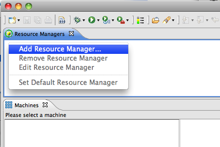
Choose the resource manager that corresponds to the target system. In this example we
will use the Open MPI resource manager, which is used to control the Open MPI Open Runtime
Environment.
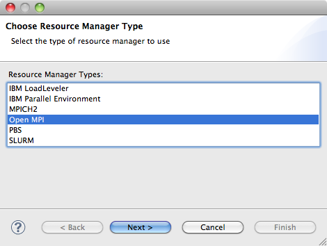
Select Next >
Step 2: Configuring a resource manager
The target system controlled by a resource manager can be either local or remote. To access the target system, PTP provides a number of
remote service providers. Currently supported remote service providers include Remote Tools (part
of PTP) and the Eclipse Remote Systems Explorer (RSE) which is an optional package that can be installed at any time.
The preferred remote service provider is Remote Tools which supports all the PTP and Remote Development Tools (RDT) functionality, however
some installations use additional features that are only available in RSE. We will only consider Remote Tools here, but the steps for configuring RSE are similar.
See also Local vs. Remote Projects for more information on the differences.
Once you have chosen a resource manager type, the Open MPI connection configuration
wizard page will be displayed to allow you to specify the location of the target system.
Step 2a: Local resource manager
To configure the simple case of a local resource manager, for example where you have Open MPI installed on your local machine, use the following steps:
-
Select Local as the Remote service provider.
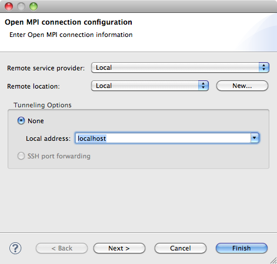
-
The Connection name will be automatically set to Local and can't be changed.
Select Next >
Step 2b: Remote resource manager
To configure a remote resource manager, use the following steps:
-
In the Open MPI connection configuration dialog, select Remote Tools as the Remote service provider.
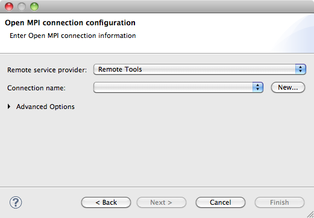
-
The Connection name will be blank at this point if no connections have been previously configured.
If you have previously configured a connection and wish to use it, select it here (it may be selected already).
- The process for configuring a new connection will differ depending on the remote service provider that you selected in the
previous step. The following steps describe configuring a Remote Tools location.
To create a new Connection:
-
Select New...
-
In the Remote Host dialog, enter a name for the connection in the Target Name field (can be anything, but it is suggested to not use a name with spaces).
 rr
rr
Select the Remote Host radio button.
Enter the address of the remote host in the Host field.
Enter your user name on the remote machine in the User field.
If you use password authentication, select the Password based authentication radio button and enter the password in the Password field.
If you use key based authentication, select the Public key based authentication radio button, select the file containing your public key, and enter the passphrase for your key (or leave blank if you don't use a passphrase).
Click Finish
-
The new connection should now be selected in the Connection name field.
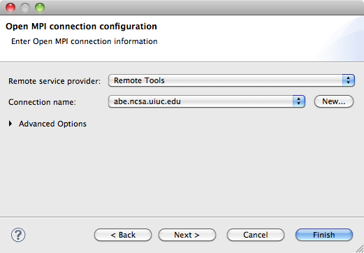
-
The Advanced Options can be used to control how the connection is used. By default, PTP will attempt to tunnel all communication over
a single ssh connection, however this can be disabled if the target system does not support port forwarding. Note that you may need to reconfigure
or disable the firewall on your local machine if this option is selected. Also, if your site does not allow outbound connections from the remote
machine to your local machine, then you must use port forwarding.
Select Next >
Step 3: Resource manager-specific configuration
The contents of the resource manager-specific configuration page will depend
on the type of resource manager that was initially selected. In this section we will show how to configure an Open MPI resource manager.
Please refer to the IBM PE, IBM LoadLeveler,
PBS, or SLURM resource manager documentation for information on these systems.
-
In this case, the Open MPI tool configuration dialog is shown.
You will not normally need to change this information. Just leave the Open MPI version set to Auto Detect,
and default values will automatically loaded into the fields.
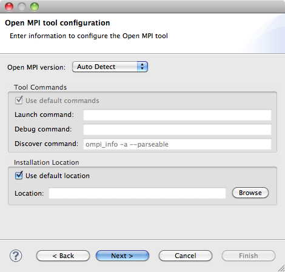r
If you wish to modify the defaul configuration (for experts only!), select a specific Open MPI version and
uncheck the Use default settings checkbox.
- Launch command
- A command line executed to launch the parallel application with Open MPI
- Debug command
- A command line executed to use Open MPI to launch a debug session for the parallel application
- Discover command
- A command line executed when the Resource Manager is started, to collect information about the Open MPI environment
Only a single command is allowed on each command field.
Several place holders (macros) are allowed, the most relevant are:
- Open_MPI_args: Command line arguments to be passed to the mpirun command, specifying options selected in the launch configuration dialog.
- Open_MPI_env: Command line arguments to be passed to the mpirun command, specifying name of environment variables.
- execPath and execName: Path and name of the executable of the parallel application to be launched by mpirun.
- progArgs: arguments to be passed to the parallel application.
If you have installed Open MPI in a non-standard location, or it is not in your path, uncheck the Use default location checkbox, then
enter the path to the installation bin directory. So, for example if your installation is in /usr/local/openmpi-1.3.4, you
would enter /usr/local/openmpi-1.3.4/bin for the location.
Select Next >
Step 4: Final resource manager configuration
The final wizard page is the Common Resource Manager Configuration, which provides an opportunity
to change a few remaining parameters about the resource manager.
If you wish to change the name or description, uncheck the Use default name and
description checkbox.
Enter a new name in the Name field. Anything can be entered.
-
Enter a new description in the Description field. Anything can be entered.
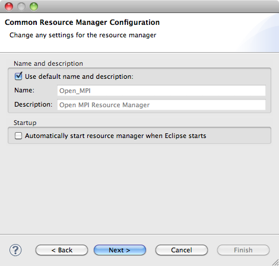
If you want the resource manager to start automatially when you start a new Eclipse session, check the Automatically start resource
manager when Eclipse starts checkbox.
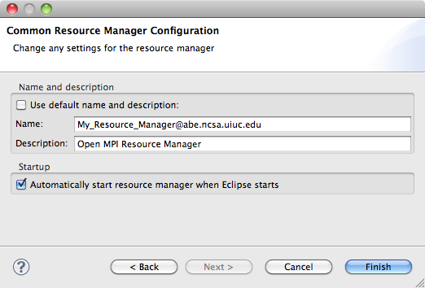
Select Finish. The new Resource Manager should appear in the list of Resource
Managers.
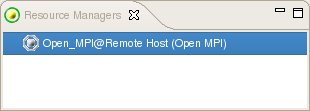
Step 6: Starting the resource manager
To start the resource manager, right mouse click on the resource manager in the Resource
Managers view, then select Start Resource Manager from the context menu.
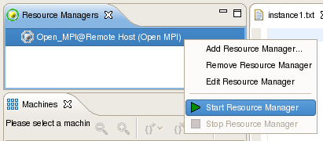
The resource manager icon should change color to green to indicate has been successfully
started.
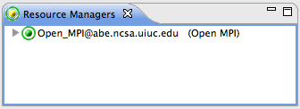
-
In the Machines view you should see an icon representing your target system and icons
showing status of the node(s).

If the resource manager fails to start (the icon is red), right click on the resource
manager and select Stop Resource Manager. Check the log files for the reason that the
resource manager failed to start, correct the error and restart again.
Editing a resource manager
It is sometimes necessary to change the configuration of an existing resource manager, for example, to change the remote machine that the resource manager controls. Note that the resource manager cannot be edited when it is running.
If the resource manager is running, stop it first. Right-click on the resource manager and
select Stop Resource Manager
Right-click on the resource manager and select Edit Resource Manager
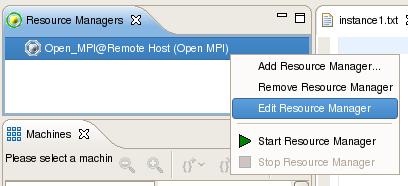
Modify the required configuration settings and click Finish.
Restart the resource manager.
Removing a Resource Manager
If the resource manager is no longer required, it can be removed from the Resource Managers view
If the resource manager is running, stop it first. Right-click on the resource manager and
select Stop Resource Manager
Right-click on the resource manager and select Remove Resource Manager
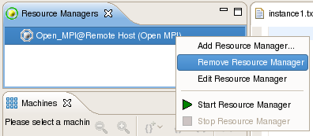
-
You will be prompted to confirm removal. Click OK
Proceed to Launching a parallel application.
Back to Top | Back to Table of Contents